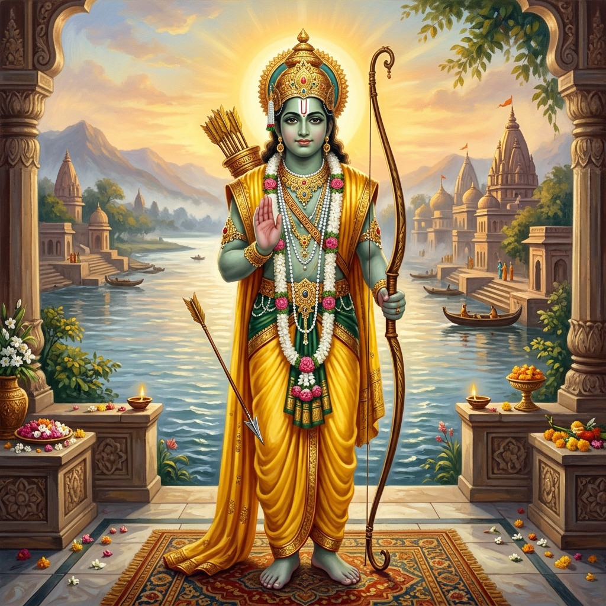

☀️
ఇక్ష్వాకు వంశవృక్షం
Ikshvaku Dynasty
సూర్య వంశ మహావిశిష్టత
రామాయణంలోని మహనీయ పాత్రలు, వారి వంశవృక్షాలు మరియు కుటుంబ సంబంధాలను తెలుసుకుందాం.

అన్వేషించడానికి క్రింది విభాగాలలో ఒకదానిని ఎంచుకోండి
రామాయణంలోని ఏ ఇద్దరు మహనీయుల మధ్యనైనా కుటుంబ, వైవాహిక లేదా గురుశిష్య సంబంధాలను తెలుసుకోండి.
భరతుడు, శ్రీరామునికి సోదరుడు. దశరథ-కైకేయిల కుమారుడు. శ్రీరాముని పాదుకలను సింహాసనంపై ఉంచి 14 ఏళ్లు నందిగ్రామం నుండి ధర్మపాలన చేసిన పరమ భ్రాతృభక్తుడు.